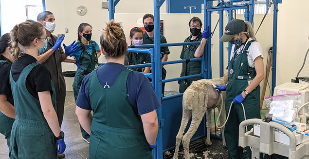

Investing in the Next Generation of Camelid Veterinarians
Each year the Northwest Camelid Foundation awards scholarships to veterinary students at Oregon State University and Washington State University who demonstrate a passion for camelid medicine and a commitment to advancing the health of llamas and alpacas.

About the Scholarships
NWCF scholarship recipients are selected by a committee at each veterinary college based on academic merit, demonstrated interest in camelid medicine, and financial need. The Foundation has awarded more than $36,000 in scholarships since the program began.
Scholarships are funded entirely by proceeds from our annual fundraiser events and by direct donations from individuals and supporting organizations. Every gift to NWCF has the potential to support a future camelid specialist.
"Regardless of the size of their herd or the location of their barn, every camelid and every owner benefits from the research and education funded by the NWCF."
— Northwest Camelid FoundationScholarship Program Details
- Awards are made annually at Oregon State University and Washington State University
- Selection is managed by the Scholarship Committee at each college
- Eligibility is limited to enrolled DVM students in good academic standing
- Preference is given to students with a demonstrated interest in large animal or camelid medicine
- Award amounts vary by year depending on available funds
For Prospective Applicants
Applications are accepted through each college's financial aid or scholarship office. Students interested in the NWCF scholarship should contact their college's scholarship coordinator directly for application requirements and deadlines.
Building a Camelid Specialty
Specialized veterinary care for llamas and alpacas is only possible when the next generation of veterinarians has been trained and supported. NWCF scholarships help make that happen.
Reduce Financial Barriers
Veterinary education is expensive. Scholarships allow students to pursue their interest in camelid medicine without being solely constrained by financial pressure.
Grow the Specialty
The more students who receive focused support and encouragement in camelid medicine, the more specialists will be available to serve owners and herds across the country.
Connect Research and Practice
Scholarship recipients often go on to careers that bridge clinical practice and research, translating lab discoveries into real-world outcomes for camelids.
Where We Award Scholarships
Carlson College of Veterinary Medicine
Oregon State University · Corvallis, OR
NWCF's longest-standing scholarship partner. OSU's Carlson College has a well-established reputation for camelid medicine and research, and our scholarship supports students who carry that work forward.
Visit OSU Vet MedCollege of Veterinary Medicine
Washington State University · Pullman, WA
In recent years, NWCF has expanded its scholarship program to WSU, supporting students at a second leading Pacific Northwest veterinary college committed to large animal and camelid medicine.
Visit WSU Vet MedSupport Our Scholarship Program
Every contribution to NWCF helps us award scholarships that shape the next generation of camelid veterinarians. Donate today and invest in the future of camelid health.
Donate to NWCF